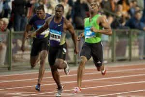
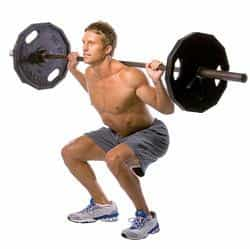
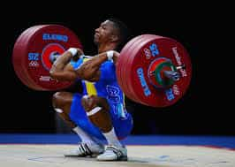

< < < Back
Don’t Believe The Myth That Weightlifting Will Slow You Down – Return Of Kings
Many older physical trainers, and even those younger ones who were proteges of the older men, will tell the trainee that there is an inverse correlation between strength and speed—that being too big and muscular will slow down an athlete (for whatever reason, I have found that this is most prevalent amongst traditional martial artists). The usual reason given is that the increased mass is simply a “dead weight”, while those with a little bit more knowledge will explain that lifting will develop “slow twitch” muscles over the “Fast twitch” muscles needed for sprinting, jumping, punching, and kicking.
I am here to tell you that the “common wisdom” is completely wrong-when done properly, weightlifting will not impede your speed, and will in fact enhance your speed and explosiveness!
Anecdotes
Perhaps you’ve heard of this man?

That is of course Jamaica’s Usain Bolt, the fastest man in the world, and holder of multiple Olympic records. Also worth noting is that in an interview, Mr. Bolt revealed that he squats 400 pounds, and at least partially attributes his nigh inhuman speed to his training regimen. And he’s not the only speed athlete who this can be said of-look at any Olympic class sprinter, they are all quite muscular fellows.

Similarly, other athletic disciplines (that’s “athletics” in the specific rather than general sense, I’m using the European term for what my countrymen call “track and field”) have claimed to utilize weightlifting in their training, such as the long jump and the hurdles. Or, you can take my word for it: at my best I had a one rep max squat of 320 pounds, and had a 38 inch vertical leap (I am judging this by my ability to perform a standing jump over 2nd-highest position hurdles, which are measured at 38 inches).
In fact, many world-level athletes of all disciplines are utilizing Olympic style weightlifting to develop speed and power.
Anyway you slice it, compound weight training is a fantastic supplement to all athletes, even those who seemingly don’t need that raw brute strength.
The Science
As I elaborated in this article, as well as in the free PDF I offer to subscribers to my website (the subscription sign-up is on the front page) there’s more than one type of way to be athletic. More accurately, there are three, speaking purely in terms of muscular and/or nervous system function, so this does not include hand-to-eye coordination or other skills related to team sports. These three things can, loosely, correlate to the three types of muscle fibers-Red—or slow—Oxidative, Fast Glycolytic-or White-, and Fast Oxidative. Rather than rehash an article that I’ve already written, we will focus on the white muscle, the fast glycolytic. This is the type of muscle you want to be training for if you want to develop sprinting speed or a high vertical leap.
Or, to put this into terms of Newton’s second law of motion, Acceleration=Force/Mass, ie: the amount of muscular force you can exert, divided by your body weight=how fast you can accelerate. And yes, I am aware that there’s probably a more mathematically accurate way of putting this.
Which Exercises To Do?
It is at this point that you’re probably asking which exercises you should train to develop those physical skills you desire. If you read my articles regularly, you will know what I am likely to say-compound free weight lifting!
In fact, I’ll go out on a limb and say if you don’t know which exercise you should do to develop a certain physical trait, you should always default to a compound lift unless you receive some further information that says otherwise. Training for speed or vertical leap is no exception to this rule.
If you are looking for sheer running speed and leaping ability, the power lifts that hit the lower body are most effective: deep “Ass to grass” squats, deadlifts, and the clean and jerk are used by professional athletes to great effect.

Similarly, if you want the ability to throw a ball or punch harder, upper body compound lifts are the key: bench presses, overhead presses and, yes, the clean and jerk, will see you through.

So for those of you who are afraid that your athletic performance will be somehow impeded by heavy weightlifting, nothing could be further from the truth.
Read More: Improve Your Weightlifting With A Video Camera